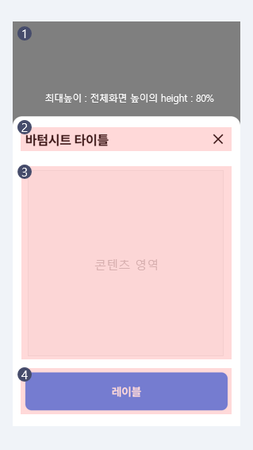
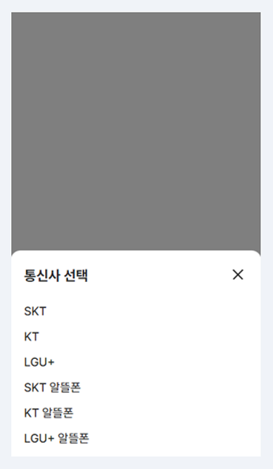
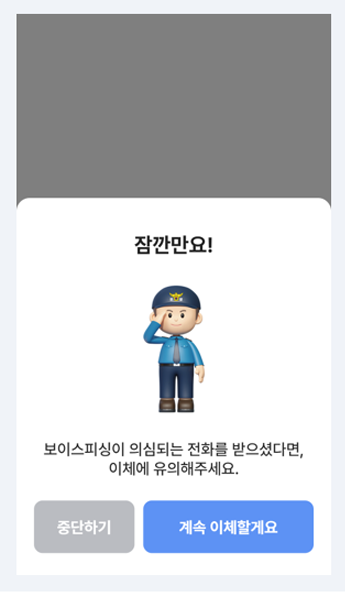
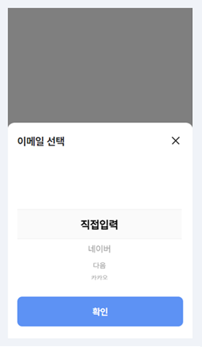

- Foundation
- Button
- Bottom Sheet
- Dropdown
- List
- Search
- Selection Controls
- Tab
- Text Field
Bottom Sheet
- Definition
- Bottomsheet는 화면의 이동없이 부가적인 액션 및 컨텐츠를 제공한다.
- 1프로세스를 보조하는 수단으로 사용자가 특정 액션 및 콘텐츠에 집중해야 하는 경우 사용한다.
- 2화면과 동일한 너비의 크기로 하단 영역에 고정되며, 다른 UI요소 앞에 위치한다.
- 3활성화 되었을 때 Bottomsheet를 제외한 UI영역에 Scrim을 제공해야 하며, Scrim영역안에 있는 콘텐츠의 조작을 차단해야 한다.
- 4Bottomsheet영역은 스크롤을 제공하지 않는 것을 우선으로 하되, 컨텐츠 내용이 길어지면 스크롤을 사용할 수 있다.
- Anatomy
-

- 1Scrim
Bottomsheet 아래 투명도를 가진 레이어를 위치 시켜 Bottomsheet를 제외한 UI요소의 조작을 차단하고 사용자가 해당 영역을 선택하여 Bottomsheet를 종료할 수 있다.
- 2Header
Bottomsheet의 내용을 대표할 수 있는 타이틀을 헤더에 배치를 하며, 정렬은 왼쪽정렬을 기본으로 하되, 경우에 따라 가운데 정렬을 할 수 있다. Bottomsheet를 종료할 수 있는 close버튼을 헤더 우측에 제공한다.
- 3Contents Area
정보의 성격에 따라 리스트, 텍스트, 버튼 등의 형태로 제공할 수 있다.
- 4Button Area (Optional)
버튼 영역에는 하나의 액션 버튼을 원칙으로 하되, 경우에 따라 2개의 버튼을 사용할 수 있다.
- 1Scrim
- Types
-
리스트 선택 유형
정보 안내 유형
Date picker UI 유형
